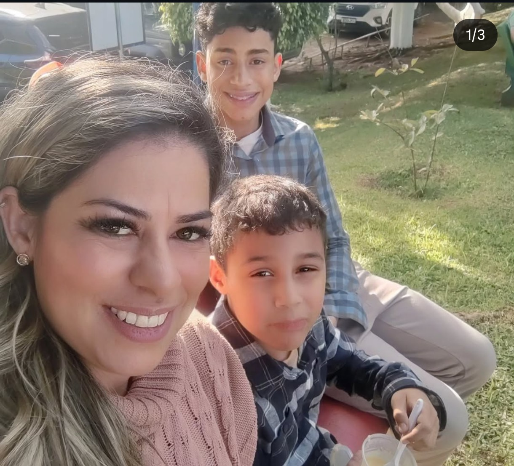
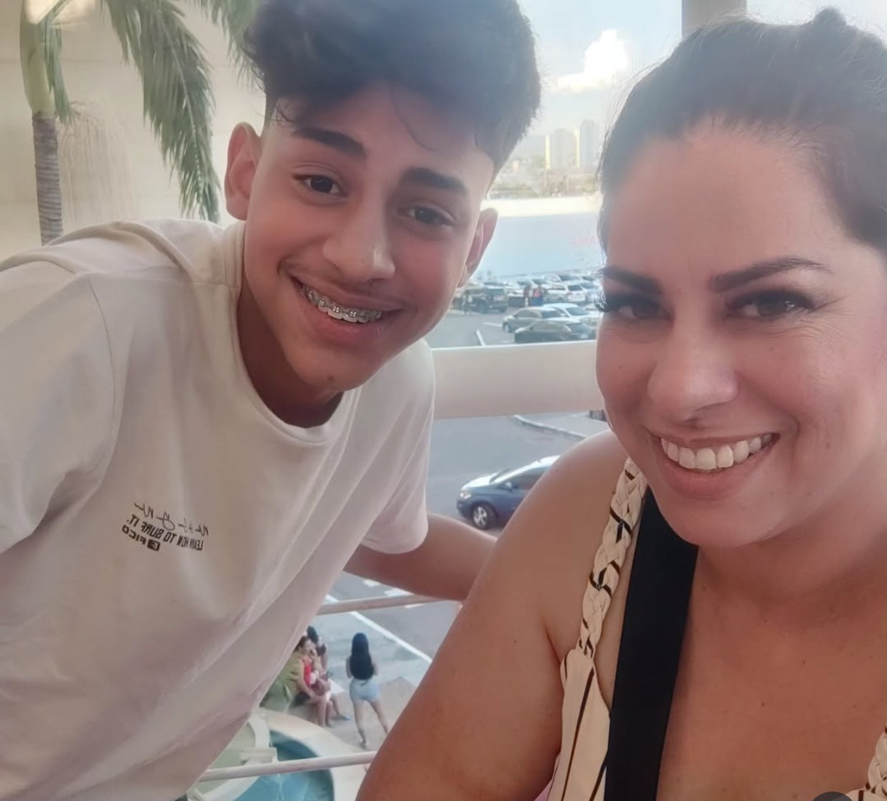
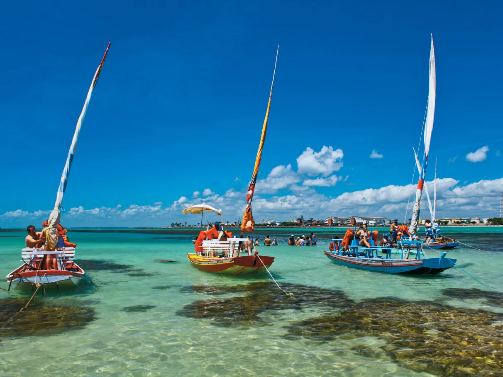
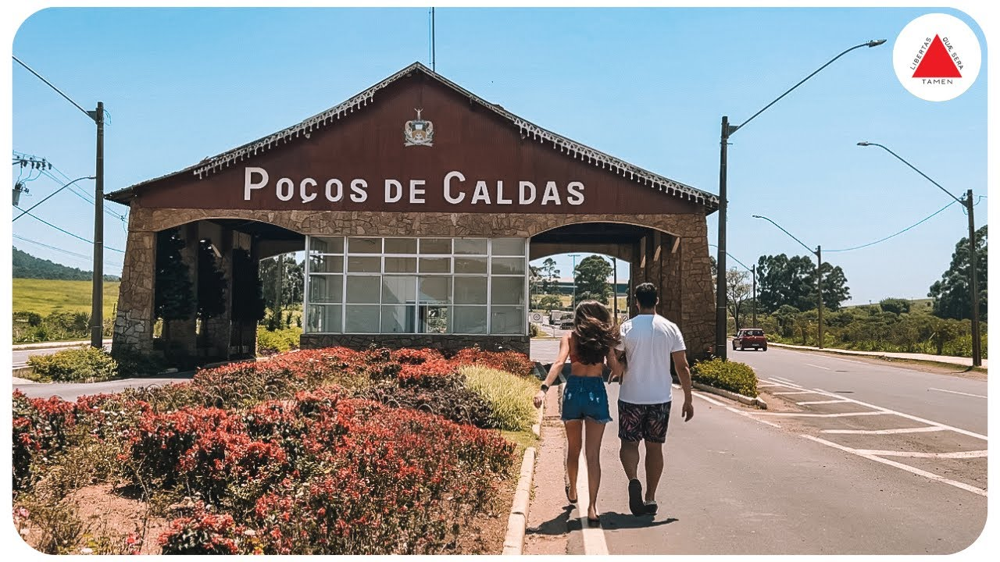
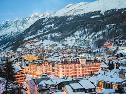
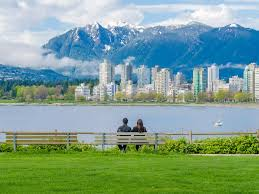
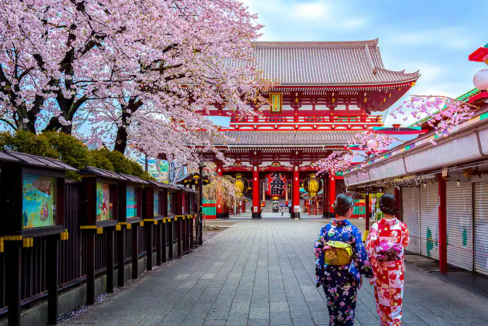

Eu me chamo Felipe Graciano de Souza Jardim, atualmente tenho 16 anos, sou natural da cidade de Francisco Morato em SP, porém moro na cidade vizinha conhecida como Franco da Rocha junto da minha mãe Katia Graciano e do meu irmão Murilo Graciano.
Trajetória acadêmica
No ano de 2015, eu ingressei em minha primeira instituição de ensino, um colégio municipal e de ensino público no bairro onde morava, nesse colégio estudei por 2 anos e foi um momento mais focado em aprendizagem com outros colegas. Após isso, ingressei em outro colégio, porém de ensino párticular, conhecido como Colégio Dom Macário, foi lá onde passei a maior parte do tempo estudando desde a primeira série do fundamental em 2017, até a nona série do fundamental em 2025, lá aprendi sobre muitas coisas sobre diferentes matérias e foi onde conheci boa parte dos meus amigos. Em 2026, ingressei em uma outra instituição de ensino, também de ensino privado, porém, para conseguir ingressar passei por um processo seletivo, marcado por três etapas eliminatórios que fez eu conhecer mais sobre a escola. Atualmente, me encontro nessa escola e onde aprendi coisas que já mais havia conhecido antes, aprendi programação, conheci novas pessoas e onde tenho aprendido novas coisas sobre mim também.

.jpg)

Meus gostos:
Meus sonhos e objetivos
Lugares que eu já visitei:



Lugares que eu gostaria de visitar:


